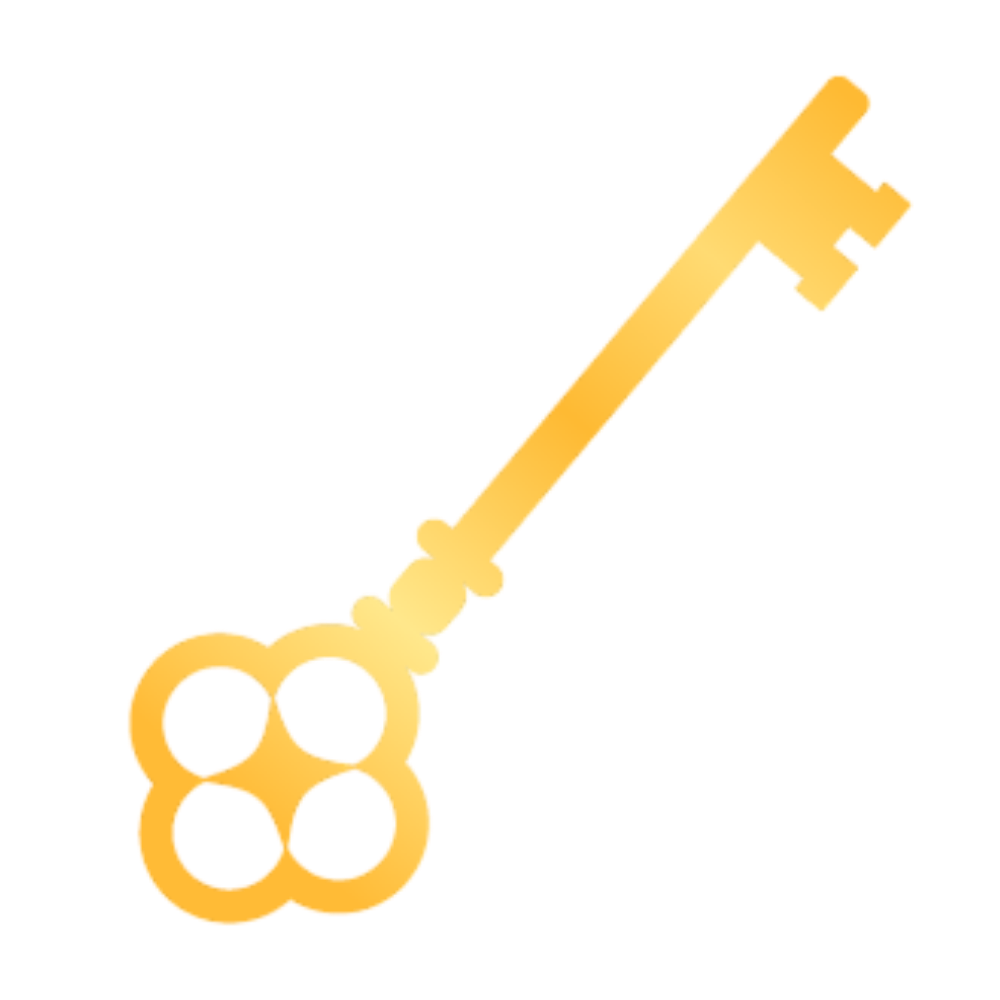

購前須知結尾扣的部分更多細節可以看這裡
👉 結尾扣的選擇？| 佩戴對象 | 水晶直徑範圍 |
|---|---|
| 女性手鍊 | 5mm – 7mm |
| 男性手鍊 | 8mm – 11mm |
手圍請貼合手腕根部量測，我們會依照量測數值製作，也可備註喜歡的鬆緊度。
⚠️ 每顆水晶大小、外觀及質地略有差異，晶體內部成形的樣式皆不同，為自然現象。
⚠️ 金屬配件請避免沐浴、泡湯、使用清潔劑；若遇水請立即擦乾，存放時建議用夾鏈袋保護。
⚠️ 由於皆為純手工製作，每條手鍊獨一無二，配件款式和水晶數量可能會有些許細微差異皆屬正常，都會維持原本的設計概念。
⚠️ 照片為實物拍攝，不同設備會有色差，我們盡力呈現最接近實品的色澤。
⚠️ 水晶功效僅供參考，無法作為科學依據。
⚠️ 若量測誤差過大需退換，需額外負擔運費與部分耗材費，並且需要重新進入排單製作排序。
⚠️ 如果送禮或是不確定手圍請私訊溝通。
⚠️ 到貨時間：
| 現貨標籤 | 72 小時內寄出 |
| 官網設計款 | 10 - 15 工作天 |
| 深度客製化 | 15 – 20 工作天 |
| 緊急單 | IG 私訊討論 (最緊急 5 工作天以上) |
往下滑！ 還有推薦清單噢～